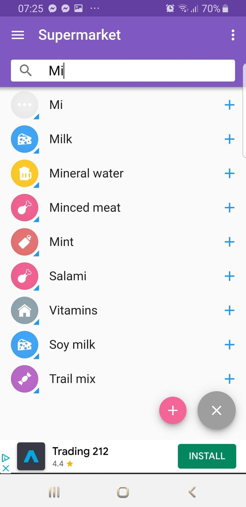

Critique of similar apps
First app review:
List Todo - Source Apple Store
The first competitor is the first suggestion of apple store.
List Todo app , is very simple and easy to use. There is a great view
of the lists in main screen and the basic tools at the bottom of the screen.
A very handy functionality is the way that each items are represented with
items still on list or fulfilled. However if a list is fulfilled it is a
little akward that doesn't change a color or look.
Adding an item is just a text input. This makes adding
a new item on an existing list unpleasant. This result
creating a list with a lot of items, to take long time
to be completed.
Second app review:
That Shipping list - Source Google Play
The second competitor is the first suggestion of google play.
This application looks a lot better than the first competitor.
The app is very handy when the user adds new items. It was giving
suggestions, depending in what the user is typing. However, using
the app a few times, then user realises that it's not a dynamic
suggestion depending on what he buys but more like a vocabulary,
or a list of words.

The way that user can handle a list and check out items that he
bought is very pleasant. He can even open history and check his last
purchases.
The lists are in the side menu and user need to open the side menu
to add a new list or navigate between lists. This might be unpleasant
if user uses a lot of stores and has multiple lists for different type
of stores.